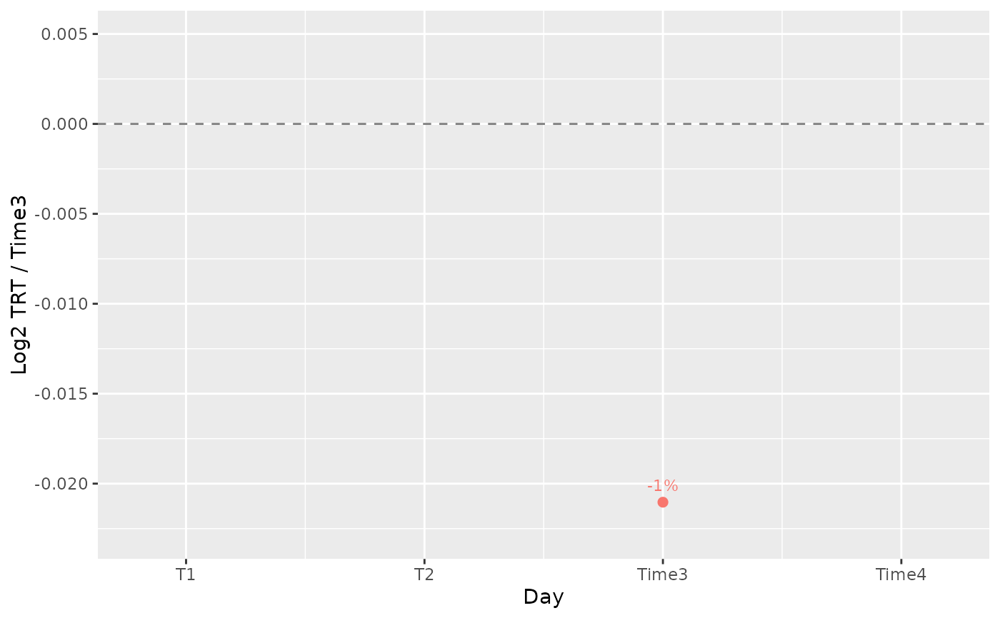
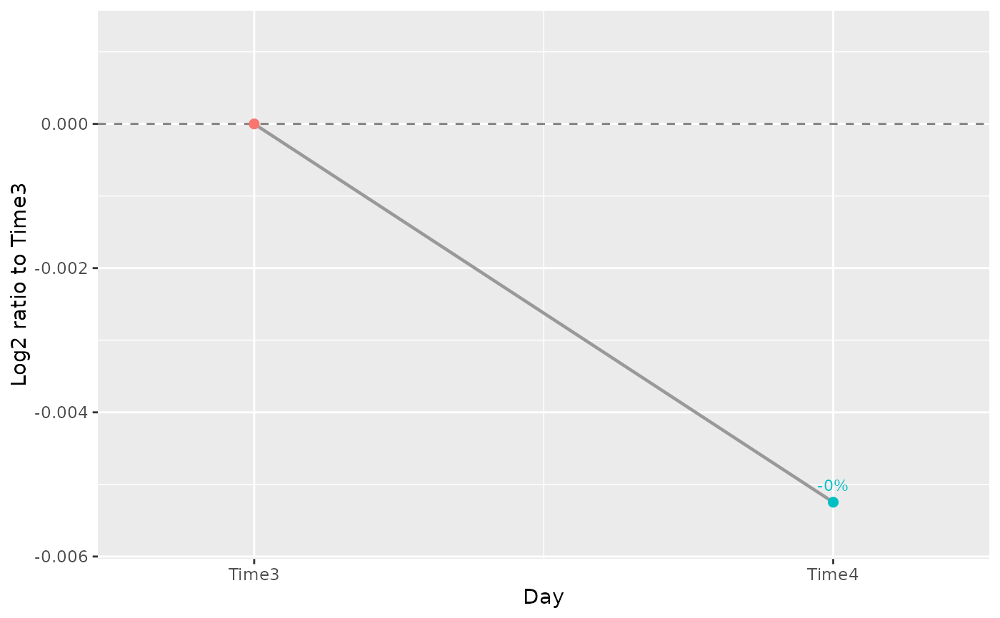

Plot the separation between two screening conditions
Source:R/plot_treatment_separation.R
plot_treatment_separation.RdShows the log2 ratio of treatment to control mean normalized abundance for selected genes. Each biological sample is first summarized over its barcodes, then samples are averaged within condition and time point.
Usage
plot_treatment_separation(
screenR_Object,
genes,
treatment,
control,
condition_column = "Treatment",
time_column = "Day",
time = NULL,
samples = NULL,
pseudocount = 0,
labels = TRUE,
palette = NULL,
point_size = 2,
line_size = 0.8,
nrow = NULL,
ncol = NULL,
scales = "fixed"
)Arguments
- screenR_Object
A normalized ScreenR object.
- genes
Gene identifiers to show, in panel order.
- treatment, control
The two distinct values of condition_column to compare. When condition_column and time_column are the same variable (a time course without treatment, such as a dropout screen), control is the reference time point and treatment one or more later time points.
- condition_column
The colData variable identifying conditions (default "Treatment"). Names such as CTRL or TRT are not required.
- time_column
The colData variable identifying stages (default "Day").
- time
Optional named numeric vector mapping stages to actual times. NULL spaces stages equally in selected sample order. All selected stages, including shared references, remain on the axis. Use this mapping to specify chronological order when samples are stored in another order.
- samples
Optional unique sample identifiers. NULL uses all samples. Use a selection to restrict the plot to one cell line, dose or other experimental stratum; such strata are not automatically modelled.
- pseudocount
Non-negative finite value added to each condition mean before taking the ratio (default 0). Zero means require a positive value; the choice can strongly affect low-abundance genes.
- labels
Whether to label percentage differences (default TRUE). With a positive pseudocount these labels also use the adjusted ratio.
- palette
Optional treatment color, or named palette overriding the stored condition palette. Otherwise the object palette is used when available, falling back to ggplot2 colors.
- point_size, line_size
Size of points and width of connecting lines.
- nrow, ncol
Optional numbers of facet rows and columns.
- scales
Facet scales: "fixed" (default), "free", "free_x" or "free_y".
Value
A ggplot object. Its data contain Gene, Time, TreatmentMean, ControlMean, NTreatment, NControl, Ratio, Log2Ratio, PercentDifference, Label and Condition. Missing comparisons are retained as NA rows.
Details
When condition_column and time_column are the same variable, every selected time point (control and treatment) is on the x axis and is compared with the control time point: the control is the reference, at 0, and is not labelled. Points are colored by time point and joined by a grey line.
Otherwise only stages with both conditions have a comparison. Other stages have missing values, never fabricated zero effects; lines break at missing comparisons. A single comparable stage can also be plotted. This is a descriptive ratio of arithmetic means, not the median barcode log2 fold change reported by hit-finding methods, a confidence interval, or a test of temporal change. Samples are averaged without pairing or adjustment for covariates. The plot is independent of the hit-calling method and accepts normalized barcode screens supported by ScreenR. No theme is applied; choose appearance with theme_set() in user code.
Examples
object <- get0("object", envir = asNamespace("ScreenR"))
plot_treatment_separation(object, "Gene_42", treatment = "TRT",
control = "Time3", time_column = "Day")

# A time course: each time point compared with the first one
plot_treatment_separation(object, "Gene_42", treatment = "Time4",
control = "Time3", condition_column = "Day", time_column = "Day")
